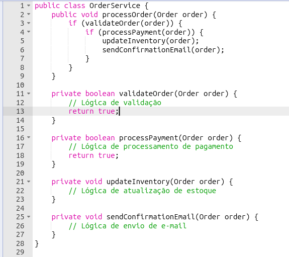
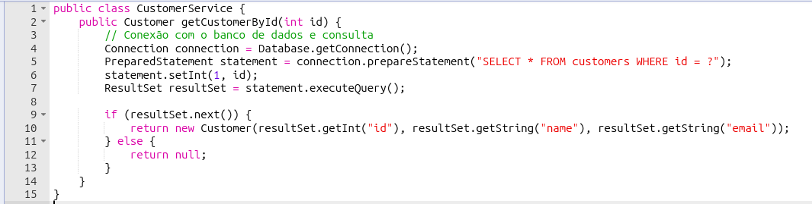
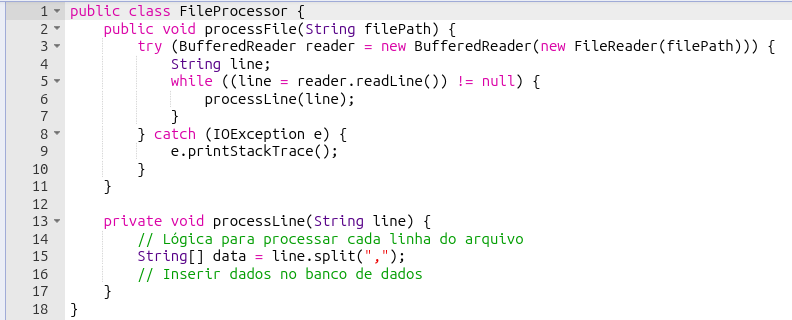
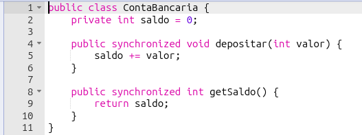
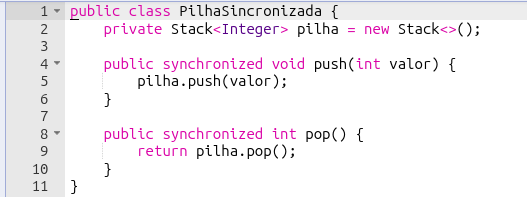
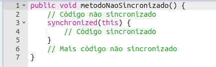

Métodos Síncronos em Java
Aplicações Práticas de Métodos Síncronos em Java

Desenvolvedor Java Sênior na Develcode
23 de setembro de 2024
Os métodos síncronos são essenciais para garantir a execução sequencial de operações críticas em aplicações Java. Vamos explorar alguns exemplos práticos de sua aplicação.
Definição: Métodos síncronos são aqueles que, ao serem chamados, bloqueiam a execução do programa até que a operação seja concluída. Isso significa que o programa espera o término do método antes de continuar com a próxima instrução. Esse comportamento é útil quando a ordem de execução é crucial, como em operações de leitura e escrita de arquivos, onde é necessário garantir que uma tarefa seja concluída antes de iniciar outra. No entanto, pode levar a problemas de desempenho se o método demorar muito para ser executado, pois o programa ficará “parado” até que a operação termine.
1. Processamento de Pedidos em E-commerce
Em um sistema de e-commerce, ao realizar um pedido, várias operações precisam ser executadas em sequência:
Validação do Pedido: Verificar a disponibilidade dos itens em estoque.
Processamento do Pagamento: Confirmar o pagamento com o provedor.
Atualização do Estoque: Reduzir a quantidade dos itens comprados.
Envio de Confirmação: Enviar um e-mail de confirmação ao cliente.
Cada uma dessas operações pode ser implementada como um método síncrono, garantindo que uma etapa só comece após a conclusão da anterior.

Exemplo de classe Java com controle síncrono de métodos.
2. Consulta a Banco de Dados
Em uma aplicação de gerenciamento de clientes, métodos síncronos podem realizar operações de CRUD (Create, Read, Update, Delete). Por exemplo, ao buscar informações de um cliente, a conexão com o banco de dados e a consulta são realizadas de forma sequencial para garantir a integridade dos dados.

Exemplo de classe de serviço Java para u controle síncrono de acesso ao banco de dados.
3. Processamento de Arquivos
Para processar arquivos de forma sequencial, como a leitura de um arquivo CSV e a inserção dos dados em um banco de dados, métodos síncronos garantem que cada linha do arquivo seja processada antes de passar para a próxima.

Exemplo de classe Java para acesso a leitura de um arquivo
4. Controle de Acesso a Recursos Compartilhados
Em aplicações multithread* [ vide rodapé], a sincronização é vital para evitar inconsistências nos dados. Por exemplo, em um sistema bancário, várias threads podem tentar atualizar o saldo de uma conta simultaneamente. Métodos sincronizados garantem que apenas uma thread* [vide rodapé] possa modificar o saldo por vez.

Exemplo de classe Java com controle sincronizado de saldo bancário.
5. Implementação de Filas e Pilhas Seguras
Estruturas de dados como filas e pilhas precisam ser sincronizadas em ambientes multithread para evitar condições de corrida, garantindo que apenas uma thread possa modificar a estrutura de dados por vez.

Exemplo de classe Java com controle de pilha com acesso sincronizado.
6. Sincronização de Blocos de Código
Além de métodos, blocos de código também podem ser sincronizados para proteger seções críticas, melhorando a eficiência ao sincronizar apenas a parte necessária do método.

Método Java não sincronizado.
Conclusão
A sincronização de métodos em Java é crucial para o desenvolvimento de aplicações robustas e seguras em ambientes multithread. Ela garante que os recursos compartilhados sejam acessados de maneira controlada, evitando inconsistências e condições de corrida.
Nota:
Multithreading é uma técnica de programação que permite a execução simultânea de múltiplos threads (ou “fios”) dentro de um único processo. Cada thread pode executar uma tarefa diferente ao mesmo tempo, compartilhando os mesmos recursos do processo principal, como memória e arquivos. Isso pode melhorar significativamente o desempenho de um programa, especialmente em sistemas com múltiplos núcleos de processamento, pois permite a execução paralela de tarefas, reduzindo o tempo de espera e aumentando a eficiência. No entanto, a programação multithread também pode ser complexa, exigindo cuidados especiais para evitar problemas como condições de corrida e deadlocks.
Thread é a menor unidade de processamento que pode ser executada de forma independente dentro de um programa. Threads permitem que um programa realize múltiplas tarefas simultaneamente, compartilhando o mesmo espaço de memória e recursos do processo principal. Isso é especialmente útil para melhorar a eficiência e o desempenho de aplicações, permitindo a execução paralela de operações, como processamento de dados e interação com o usuário. No entanto, a programação com threads requer cuidado para evitar problemas como condições de corrida e Em linguagem de programação, uma thread é a menor unidade de processamento que pode ser executada de forma independente dentro de um programa. Threads permitem que um programa realize múltiplas tarefas simultaneamente, compartilhando o mesmo espaço de memória e recursos do processo principal. Isso é especialmente útil para melhorar a eficiência e o desempenho de aplicações, permitindo a execução paralela de operações, como processamento de dados e interação com o usuário. No entanto, a programação com threads requer cuidado para evitar problemas como condições de corrida e deadlocks, que podem ocorrer quando múltiplas threads tentam acessar os mesmos recursos ao mesmo tempo., que podem ocorrer quando múltiplas threads tentam acessar os mesmos recursos ao mesmo tempo.
Deadlock ocorre quando duas ou mais threads ficam permanentemente bloqueadas, esperando por recursos que estão sendo ocupados umas pelas outras, criando um ciclo de dependência que impede a continuação da execução. Isso geralmente acontece em sistemas multithreaded quando não há uma gestão adequada dos recursos compartilhados, como memória ou arquivos. Para evitar deadlocks, é importante implementar estratégias como a prevenção, a detecção e a recuperação, além de seguir boas práticas de programação, como a aquisição ordenada de recursos e o uso de timeouts.